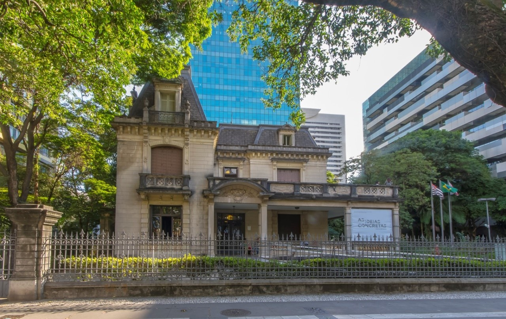
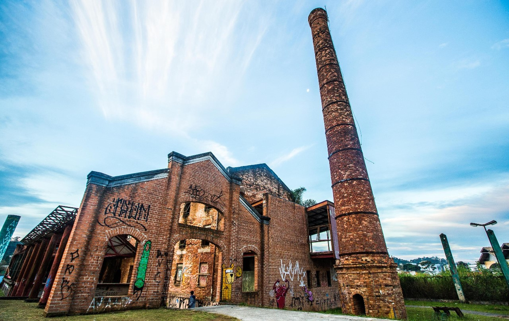

O Theatro Municipal de São Paulo que é um dos mais importantes teatros do Brasil e foi inaugurado em 1911 para atender ao desejo da elite paulista da época que desejava que a cidade estivesse à altura dos grandes centros culturais e seu estilo arquitetônico é semelhante ao dos mais importantes teatros do mundo e foi inspirado na Ópera de Paris. O edifício faz parte do Patrimônio Histórico do estado desde 1981.

O Museu Paulista da Universidade de São Paulo, mais conhecido como Museu do Ipiranga. Foi inaugurado oficialmente em 7 de setembro de 1895 é um importante símbolo da independência do Brasil.

A Casa das Rosas é um imóvel localizado na Avenida Paulista em São Paulo, o casarão foi projetado pelo escritório de Francisco de Paula Ramos de Azevedo pouco antes de sua morte, tendo a construção terminada em 1935. O imóvel foi habitado até 1986, quando sofreu desapropriação pelo governo do estado de São Paulo. Em 1991 foi então inaugurado um espaço cultural batizado de "Casa das Rosas". Recebeu esse nome pois possuía um dos maiores e mais belos jardins de rosas da cidade. A partir de 2004, a Casa se tornou o Espaço Haroldo de Campos de Poesia e Literatura e passou a ser administrada pelo professor e poeta Frederico Barbosa, o imóvel revela uma parte da história da avenida Paulista que nem todos conhecem.
A antiga fábrica de Sal foi construída em 1898 durante o período da industrialização paulista em conjunto com a estação Ribeirão Pires Railway a edificação é tombada como patrimônio histórico de São Paulo.
Uma vila histórica em ruínas, conhecida também por sua arquitetura inglesa, já se candidatou a Patrimônio Mundial da Humanidade e foi testemunha de uma importante fase de expansão da tecnologia ferroviária no Brasil na segunda metade do século XIX."Paranapiacaba" originou-se do termo tupi paranapiacaba, que significa "lugar de onde se vê o mar". Em 1874, foi inaugurada a Estação do Alto da Serra, que, mais tarde, seria denominada Paranapiacaba. Lugar que simplesmente encanta com suas casas de madeira e sua típica neblina.

Reduto dos paulistanos, o Ibirapuera é o mais importante parque urbano de São Paulo. Seus três lagos artificiais são interligados e ocupam 1,6 milhão de m2. Foi inaugurado em 1954 para comemorar o quarto centenário da cidade. Possui ciclovia, 13 quadras iluminadas, pistas de corrida, passeio e descanso e áreas abertas para shows. Abriga prédios públicos, museus, planetário, o prédio da Bienal, ginásio de esportes, Museu do Presépio, Museu da Aeronáutica e do Folclore, o Obelisco, o Monumento às Bandeiras e o Pavilhão Japonês.